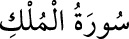

67- el-MÜLK SÛRESİ
Mekke’de nâzil olmuştur; 30 âyettir.
Adını, birinci âyetinde geçen «el-mülk» kelimesinden almıştır.
Ayrıca Tebâreke, Münciye, Mücâdele,
Mâni’a, Vâkiye adları ile de anılır.
Bu sûreyi her gece okuyanın,
pek büyük sevaba nâil olacağına ve
sûrenin fazîletlerine dâir hadisler vardır.